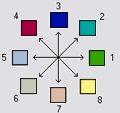

Summary
Calculates a grid of contributing areas using the single direction D8 flow model. The contribution of each grid cell is taken as one (or when the optional weight grid is used, the value from the weight grid). The contributing area for each grid cell is taken as its own contribution plus the contribution from upslope neighbors that drain in to it according to the D8 flow model.
If the optional outlet point shapefile is used, only the outlet cells and the cells upslope (by the D8 flow model) of them are in the domain to be evaluated.
By default, the tool checks for edge contamination. This is defined as the possibility that a contributing area value may be underestimated due to grid cells outside of the domain not being counted. This occurs when drainage is inwards from the boundaries or areas with no data values for elevation. The algorithm recognizes this and reports "no data" for the contributing area. It is common to see streaks of "no data" values extending inwards from boundaries along flow paths that enter the domain at a boundary. This is the desired effect and indicates that contributing area for these grid cells is unknown due to it being dependent on terrain outside of the domain of data available. Edge contamination checking may be turned off in cases where you know this is not an issue or want to ignore these problems, if for example, the DEM has been clipped along a watershed outline.
Usage
Command Prompt Syntax:
mpiexec -n <number of processes> AreaD8
-p <pfile>
-ad8 <ad8file>
[-o <outletfile>]
[-wg <wgfile>]
[-nc]
[-lyrname <layer name>]
[-lyrno <layer number>]
Parameters:
- pfile: Input flow directions grid
- ad8file: Output contributing area grid
- outletfile: input outlets file (OGR readable dataset, optional)
- wgfile: Input weight grid (optional)
- nc: Flag for edge contamination
- layer name: OGR layer name if outlets are not the first layer in outletfile (optional)
- layer number: OGR layer number if outlets are not the first layer in outletfile (optional)
Note: Layer name and layer number should not both be specified.
Syntax
D8ContributingArea (Input_D8_Flow_Direction_Grid, {Input_Outlets}, {Input_Weight_Grid}, Check_for_edge_contamination, Input_Number_of_Processes, Output_D8_Contributing_Area_Grid)
| Parameter | Explanation | Data Type |
|---|---|---|
| Input_D8_Flow_Direction_Grid |
Dialog Reference A grid of D8 flow directions which are defined, for each cell, as the direction of the one of its eight adjacent or diagonal neighbors with the steepest downward slope.  Flow Direction Coding: 1 -East, 2 - Northeast, 3 - North, 4 - Northwest, 5 - West, 6 - Southwest, 7 - South, 8 - Southeast. This grid can be obtained as the output of the "D8 Flow Directions" tool. There is no python reference for this parameter. |
Raster Layer |
| Input_Outlets (Optional) |
Dialog Reference A point feature defining the outlets of interest. If this input is used, only the cells upslope of these outlet points are considered to be within the domain being evaluated. There is no python reference for this parameter. |
Feature Layer |
| Input_Weight_Grid (Optional) |
Dialog Reference A grid giving contribution to flow for each cell. These contributions (also sometimes referred to as weights or loadings) are used in the contributing area accumulation. If this input file is not used, the contribution to flow will assumed to be one for each grid cell. There is no python reference for this parameter. |
Raster Layer |
| Check_for_edge_contamination |
Dialog Reference A flag that indicates whether the tool should check for edge contamination. Edge contamination is defined as the possibility that a contributing area value may be underestimated due to the fact that grid cells outside of the domain have not been evaluated. This occurs when drainage is inwards from the boundaries or areas with "no data" values for elevation. The algorithm recognizes this and reports "no data" for the impacted cells. It is common to see streaks of "no data" values extending inwards from boundaries along flow paths that enter the domain at a boundary. This is the desired effect and indicates that contributing area for these grid cells is unknown due to it being dependent on terrain outside of the domain of available data. Edge contamination checking may be turned off in cases where you know this is not an issue, or want to ignore these problems, if for example, the DEM has been clipped along a watershed outline. There is no python reference for this parameter. |
Boolean |
| Input_Number_of_Processes |
Dialog Reference The number of stripes that the domain will be divided into and the number of MPI parallel processes that will be spawned to evaluate each of the stripes. There is no python reference for this parameter. |
Long |
| Output_D8_Contributing_Area_Grid |
Dialog Reference A grid of contributing area values calculated as the cells own contribution plus the contribution from upslope neighbors that drain in to it according to the D8 flow model. There is no python reference for this parameter. |
Raster Dataset |
Code Samples
There are no code samples for this tool.
Tags
There are no tags for this item.
Credits
There are no credits for this item.
Use limitations
There are no use limitations for this item.